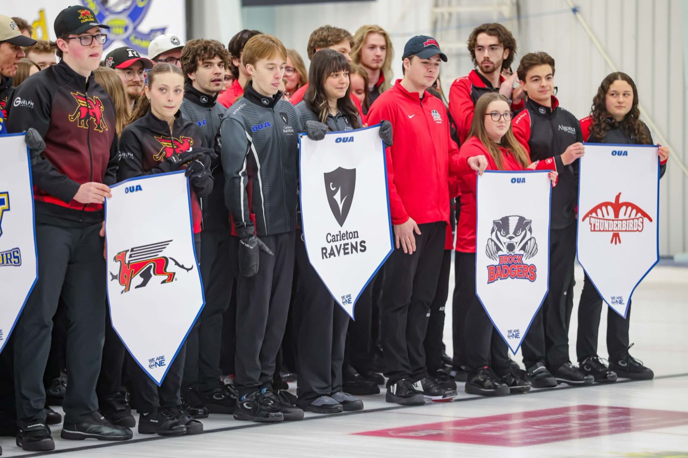
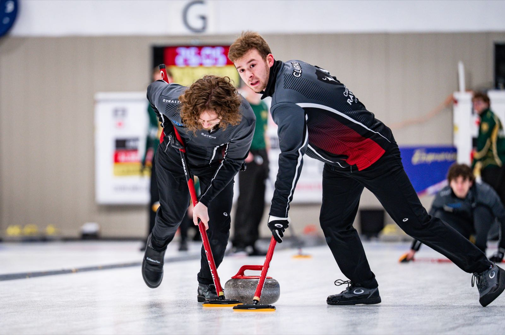

2026–27 season
Championships
The Ravens' season builds to two championships each February: the OUA provincial championship, then the U SPORTS national championship.
The road to nationals
From Ontario to the national podium
-
Feb. 12–14, 2027
OUA Curling Championships
Eight men's and eight women's teams from Ontario universities compete for the provincial banner.
-
Top three advance
Qualify for nationals
The OUA gold, silver and bronze medallists in each division earn berths at the national championship.
-
Feb. 22–26, 2027
U SPORTS Curling Championships
The best university teams in Canada play for the national title, this year in Calgary.
Provincial championship
OUA Curling Championships

Ontario University Athletics crowns its curling champions at a three-day event each February, with eight men's teams and eight women's teams.
The first two days are a round robin that sets the seeding. On the final day all eight teams play a single-elimination bracket: quarterfinals, semifinals, then the gold and bronze medal games. The gold, silver and bronze medallists in each division qualify for the U SPORTS championships.
Last season the Ravens men won their first six games, then took silver after an 8–5 loss to Laurier in the gold medal game. They won the OUA title in 2019 and 2025.
- Dates
- February 12–14, 2027
- Women
- Westmount Curling ClubHosted by the Waterloo Warriors
- Men
- KW Granite ClubHosted by the Laurier Golden Hawks
National championship
U SPORTS Curling Championships

The U SPORTS Curling Championships, run with Curling Canada, decide the national university champions. Eight teams per division qualify through their conferences. In 2026 the OUA sent three, Canada West and Atlantic University Sport two each, and the host school one.
Every team plays a full round robin. The top four advance to the semifinals, followed by the bronze and gold medal games. The 2026 champions earned the right to represent Canada at the 2027 FISU World University Games.
The Ravens are two-time national champions (women 2014, men 2019) and won men's silver in 2026.
- Dates
- February 22–26, 2027
- Venue
- Calgary Curling ClubCalgary, Alberta
- Hosts
- University of Calgary Dinos and SAITHeld with the CCAA college championships